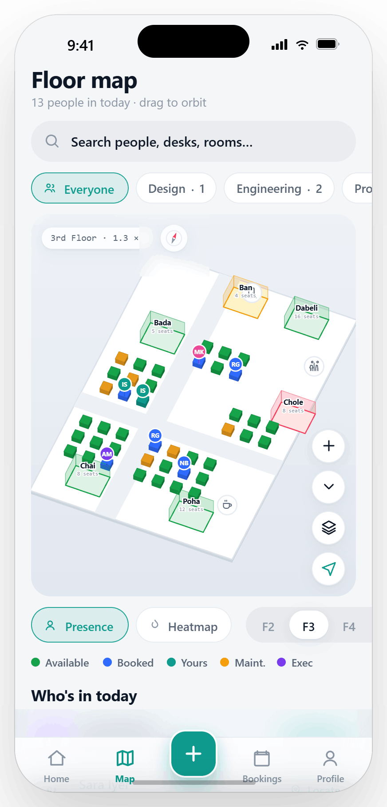
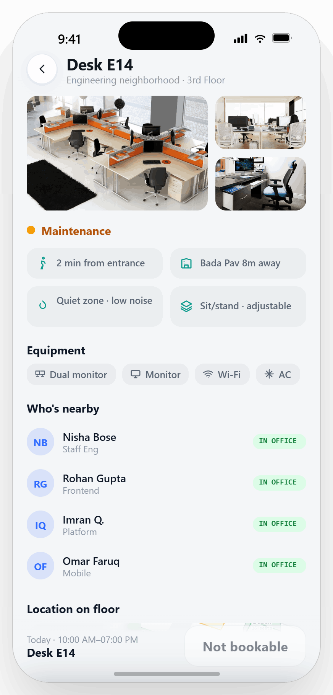
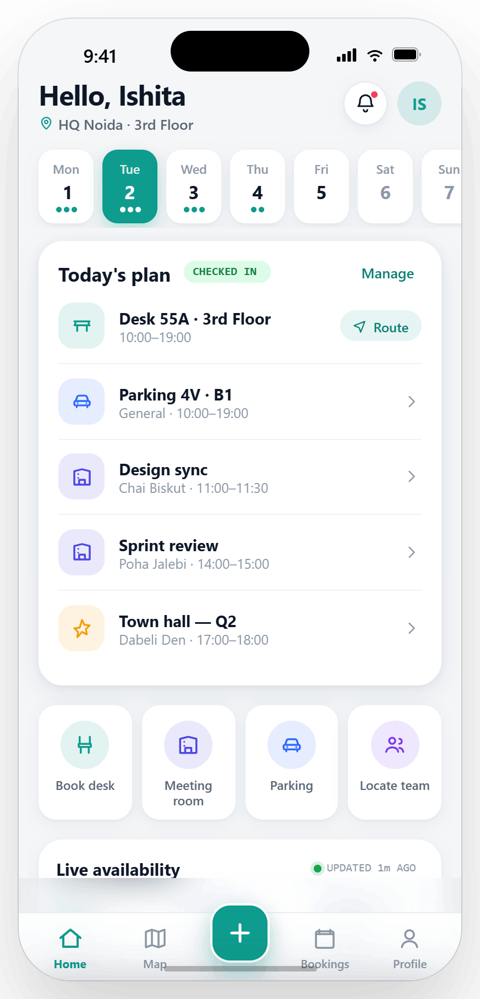
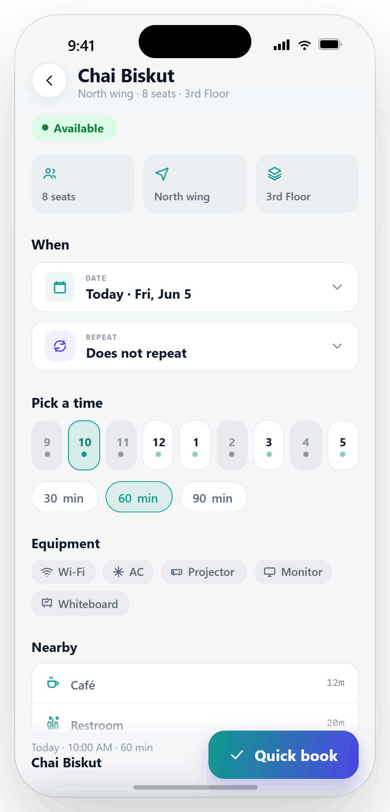
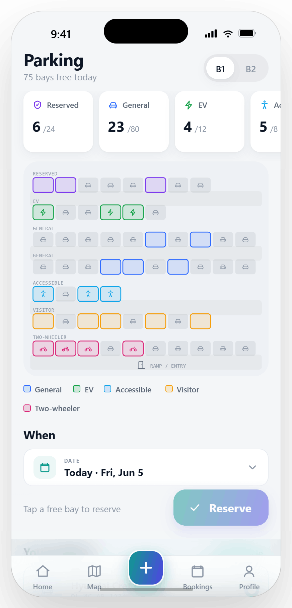
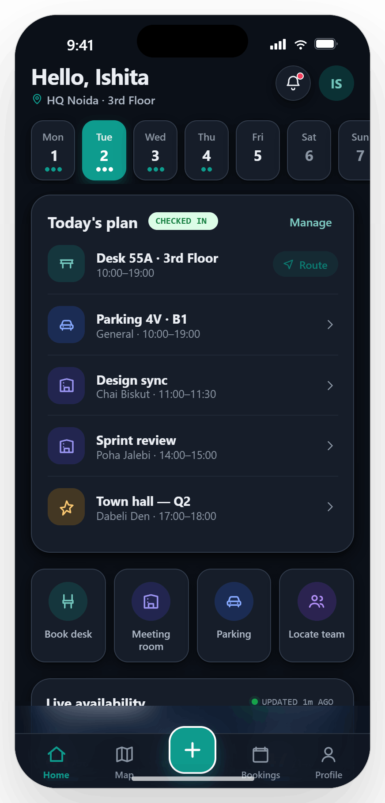

A workplace booking app, rethought as a workplace operating system — answering “where do I sit, who’s in, can I park, which room’s free?” in seconds.



When everyone stopped coming in every day, the simplest questions became the hardest. FlexiSpace existed — but it answered almost none of them.
Teammates were scattered across floors with no way to find each other — or know who was even in — before commuting in.
Rooms were hunted by walking the corridor and peering through glass. Double-bookings and ghost reservations were routine.
Booking happened blind — no view of what was free, who you’d sit beside, or which spots had the monitor and standing options you needed.
Parking ran on spreadsheets and luck. People circled the basement at 9am, unsure whether a bay — or a charger — would be there.
Every question above is really a single need: see the workplace, then act on it — in one thumb-reachable flow.
Desk, room and parking collapse behind one center action — book in three taps, never more.
See who’s in and where they’re sitting before you commit your own day.
Pan and orbit the real floor to locate people, desks and the route to your seat.
A live week strip turns scattered hybrid days into a plan you can read at a glance.
Designed thumb-out, for a phone in a hallway — not a dashboard on a desk.
Every flow earns its taps. Defaults are smart; confirmation is one motion.
Availability and presence are never hidden — the office is legible at a glance.
The right information surfaces first, so a choice takes seconds, not scrolling.
Transitions explain where things go — motion as wayfinding, never decoration.
The old app was a pile of disconnected cards. The redesign rebuilt the model from the question down — drag the handle to compare.
Each major feature, with the decisions that shaped it. Mockups are captured live from the working prototype.
Home stopped being a launcher and became a plan. The first scroll answers “what’s my day, and is the office ready for it?”
Desk, parking and meetings stitched into one timeline with a live check-in state.
Desks, rooms and bays free right now — updated continuously, not on refresh.
Book a desk, room or bay — or locate a teammate — without leaving home.
A tappable week with booking dots turns hybrid planning into one swipe.
Seat selection became a confident choice. You see the neighborhood, the people, the amenities and the route before you tap book.
Seats ranked by team proximity, your preferences and booking history.
Live presence of teammates around the seat — sit beside the right people.
Window, quiet, standing, dual-monitor — filter to the setup you actually need.
A persistent action bar keeps confirmation one thumb-reach away as you scroll.

Booking a room is now a glance at a timeline. Availability, equipment and the busy hours are all on one screen.
Tap an hour and a duration — the timeline shows what’s open at a glance.
A mini histogram surfaces peak demand so you avoid the 2pm crunch.
Wi-Fi, AC, projector, whiteboard, video — matched to the meeting you’re running.
Hold it once or set it to repeat — the schedule carries across every flow.

Parking went from spreadsheet roulette to a live map. Tap a free bay, reserve, and drive in knowing it’s yours.
Every bay rendered by zone and status — free spots are obvious and tappable.
Reserved, general, EV, accessible, visitor — counts update against capacity.
Chargers and accessible bays are first-class, not buried in a list.
Reserve for the day or set a repeat that mirrors your in-office pattern.
The floor map doubles as a people finder. Search a name, filter a team, and the route to their desk is one tap away.
Live avatars sit on real desks — see who’s in and exactly where they are.
Isolate Design, Engineering, Product and more to find your people fast.
One field across people, desks and rooms — type a name, jump to them on the map.
Tap a person for their full profile — and a turn-by-turn route to their seat.
The real, working prototype — live below. Tap through it, or jump to a flow.
An evolved teal-to-indigo identity, one type pairing, and a status language that reads the same on every surface.

Every token is mode-aware — surfaces, lines and accents lift to AA contrast automatically in dark mode.
A concept redesign — these are the qualitative shifts and targets the new flows were built to hit.
Smart defaults and a sticky CTA collapse desk, room and parking into a single confident motion.
Presence and availability are always visible — people plan their day around real information.
A clearer hierarchy and one map for navigation make the whole office feel legible and quick.
Once the floor map became interactive, half the other screens got simpler — wayfinding answered questions the lists were straining to.
Folding desk, room and parking behind one action added a tap, but it kept the bar honest and the home screen calm. Worth it.
Transitions carried so much meaning that I’d prototype them in week one next time, not validate them at the end.
Designing one status language and one schedule object — reused across every flow — sharpened how I reason about product, not just screens.